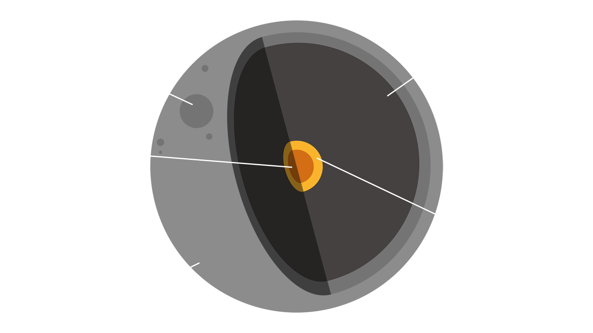

Take a look at what the moon is like under the surface

What's It Made Of Glossary
Lunar craters are impact craters upon the Earth's moon. They are large compressions in the Moons surface where spacial bodies have collided with the natural satellite.
Its rocky mantle is about 825 miles (1,330 km) thick and made up of dense rocks rich in iron and magnesium. Magmas in the mantle made their way to the surface in the past and erupted volcanically for more than a billion years — from at least four billion years ago to fewer than three billion years past.
The moon very likely has a very small core, just 1 to 2 percent of the moon's mass and roughly 420 miles (680 km) wide. It likely consists mostly of iron, but may also contain large amounts of sulfur and other elements.
Like the four inner planets, the moon is rocky. It's pockmarked with craters formed by asteroid impacts millions of years ago. Because there is no weather, the craters have not eroded.
The average composition of the lunar surface by weight is roughly 43 percent oxygen, 20 percent silicon, 19 percent magnesium, 10 percent iron, 3 percent calcium, 3 percent aluminum, 0.42 percent chromium, 0.18 percent titanium and 0.12 percent manganese.
Orbiters have found traces of water on the lunar surface that may have originated from deep underground. They have also located hundreds of pits that could house explorers who remain on the moon long-term.